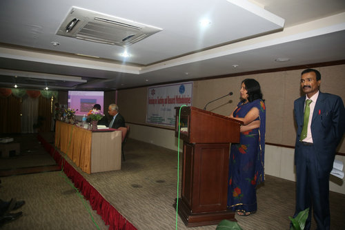
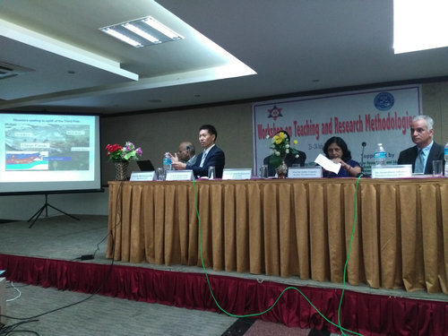
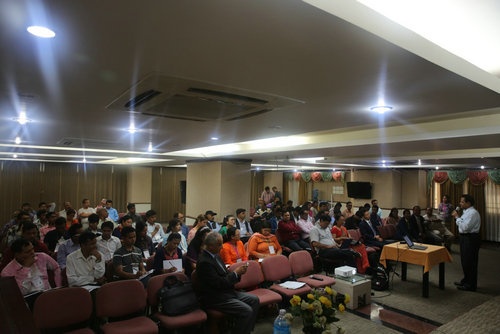
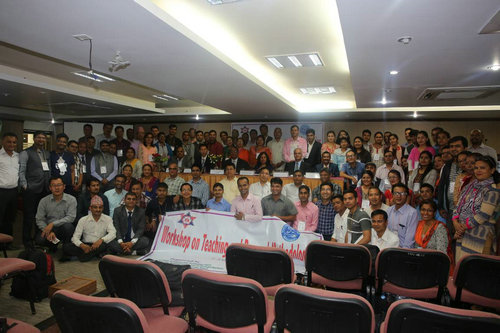

中新社加德满都7月24日电（张晨翼 徐田利），7月23至24日，中国科学院加德满都科教中心与特里布文大学科学与技术学院、应用科学与技术研究中心联合主办“特里布文大学2017年新职工入职培训班”。
来自该校科学与技术学院的百余位新聘教职工参加了该次培训。特里布文大学副校长苏妲、中科院加德满都科教中心执行主任梁尔源、特里布文大学科学与技术学院院长拉姆·普拉萨·卡蒂瓦达、应用科学与技术研究中心执行主任拉梅什瓦尔、尼泊尔国家计划委员会官员苏尼尔·巴布·施雷斯塔等出席培训班开班仪式。
苏妲在发言中首先欢迎新职工加入特里布文大家庭，同时也希望新进教职工珍惜培训机会，尽快适应新的工作环境。此外，她对中科院加德满都科教中心组织此次培训活动表示感谢。
在23日的培训班开班仪式上，梁尔源代表中心主任姚檀栋院士介绍了中国科学院加德满都科教中心建立的背景、宗旨以及近期在园区建设、科研、人才培养和服务地方发展等方面的主要进展；在24日的培训班上，梁尔源根据自己对科学研究的体会，针对文献阅读和科技写作等方面作了系统的报告，鼓励新职工发挥自己的主观能动性，充分利用一切有利条件，在新工作岗位上贡献自己的力量。
此外，来自该大学教育系、物理系、微生物系、植物系的教授结合自己的经验与新职工分享了教学方法、教学改革、科学研究、项目申请书的书写等方面的经验。
特里布文大学建于1959年，是尼泊尔的第一所高校，也是尼规模最大的高等学府，通常由总理担任校长。（完）
来源：中国新闻网

特里布文大学副校长苏妲致辞

梁尔源在培训班开班仪式上作主题报告

培训班现场

培训班师生合影